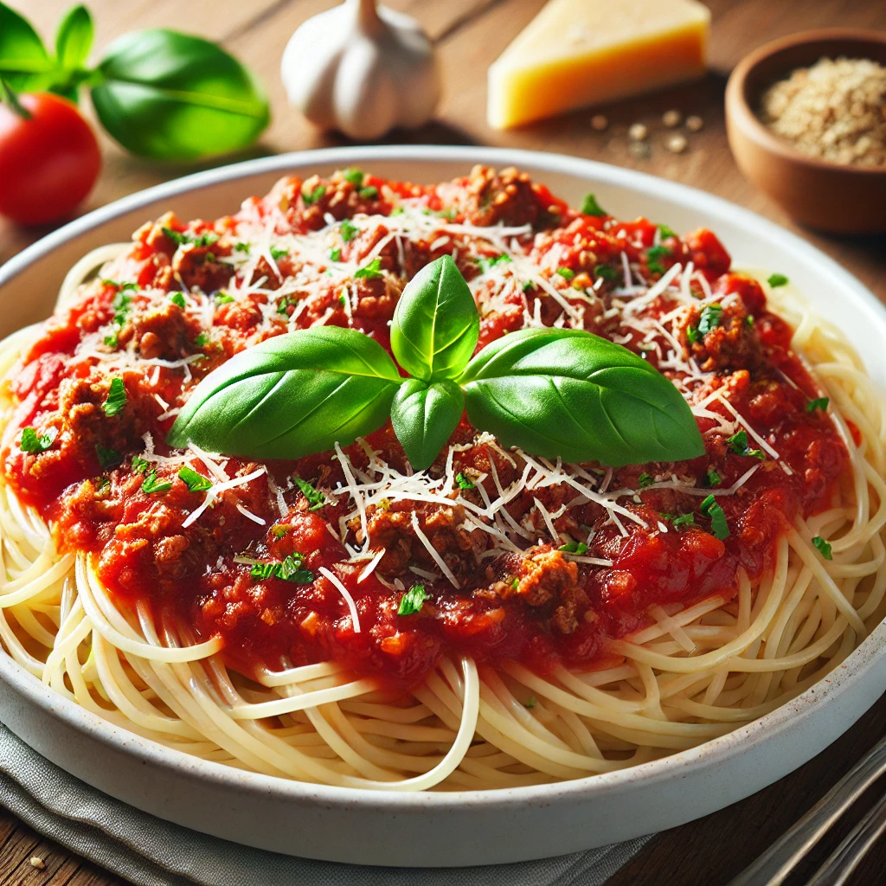

Ready to eat spaghetti

Steps to Prepare Spaghetti
- Cook the Spaghetti: Bring a large pot of salted water to a boil.
Add the spaghetti and cook according to the package instructions until al dente.
Drain and set aside.
- Prepare the Sauce: In a saucepan, heat some olive oil over medium heat.
Add minced garlic and chopped onions, sauté until softened.
Add ground beef and cook until browned, breaking it up with a spoon.
Stir in crushed tomatoes, salt, pepper, dried oregano, and basil.
Simmer for 15-20 minutes to let the flavors meld.
- Combine and Serve: Add the cooked spaghetti to the sauce and toss to combine.
Cook for another 2-3 minutes to heat through.
Serve hot, topped with grated Parmesan cheese and fresh basil leaves.
Back to Index